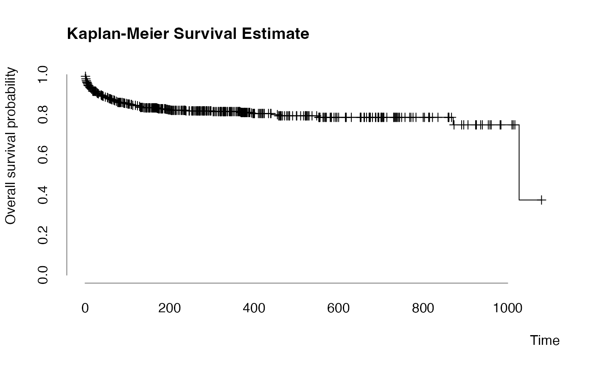
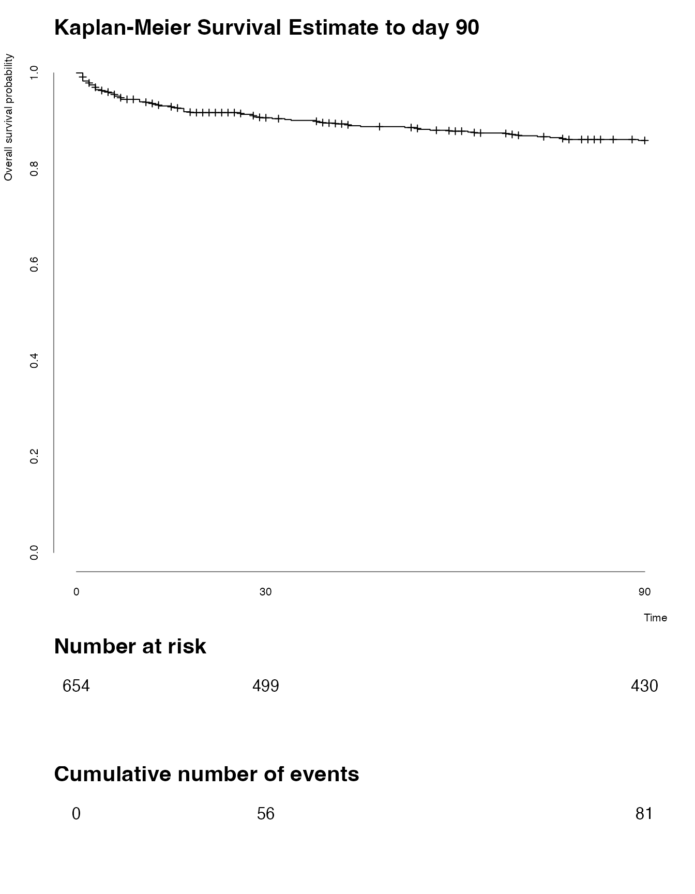

Authors: Sebastian Gibb [aut, cre] (https://orcid.org/0000-0001-7406-4443)
Last modified: 2021-07-03 16:11:00
Compiled: Sat Jul 3 16:13:02 2021
The ameld Package
The ameld R package provides a dataset, eldd, of patients evaluated for liver transplantation at the University Hospital of Leipzig from November 2012 to June 2015. eldr contains the reference limits for the laboratory measurements used in eldd.
Access the Data
The datasets could be loaded as follows:
## [1] "Age" "Sex" "DaysAtRisk" "Deceased" "LTx"
## [6] "Cirrhosis" "ALF" "Ethyltoxic" "HBV" "HCV"
## [11] "AIH" "PBC" "PSC" "NASH" "Cryptogenic"
## [16] "Dialysis" "GIB" "HCC" "SBP" "ALAT_S"
## [21] "ALB_S" "AP_S" "ASAT_S" "B_MPV_E" "B_PLT_E"
## [26] "B_WBC_E" "BILI_S" "BILID_S" "CA_S" "CHE_S"
## [31] "CHOLG_S" "CL_S" "CRE_S" "CRP_S" "CYSC_S"
## [36] "GGT_S" "IL6_S" "INR_C" "NA_S" "P_S"
## [41] "PALB_S" "PROT_S" "PTH_S" "VDT_OH_S"| Age | Sex | DaysAtRisk | Deceased | LTx | Cirrhosis | ALF | Ethyltoxic | HBV | HCV |
|---|---|---|---|---|---|---|---|---|---|
| 68 | male | 200 | 0 | 0 | 1 | 0 | 1 | 1 | 0 |
| 64 | male | 3 | 1 | 0 | 1 | 0 | 1 | 0 | 0 |
| 67 | female | 208 | 0 | 0 | 1 | 0 | 1 | 0 | 0 |
| 32 | female | 17 | 1 | 0 | 0 | 1 | 0 | 0 | 0 |
| 64 | female | 189 | 0 | 0 | 1 | 0 | 1 | 0 | 0 |
| 79 | male | 674 | 0 | 0 | 1 | 0 | 1 | 0 | 0 |
| Code | Unit | LongDescription | ShortDescription | LowerLimit | UpperLimit | AgeDays | Sex |
|---|---|---|---|---|---|---|---|
| ALAT_S | µkat/l | alanine aminotransferase | ALAT | 0.17 | 0.85 | 6574 | male |
| ALAT_S | µkat/l | alanine aminotransferase | ALAT | 0.17 | 0.58 | 6574 | female |
| ALB_S | g/l | albumin | Alb | 35.00 | 52.00 | 6574 | both |
| AP_S | µkat/l | alkaline phosphatase | AP | 0.67 | 2.15 | 6574 | male |
| AP_S | µkat/l | alkaline phosphatase | AP | 0.58 | 1.74 | 6574 | female |
| ASAT_S | µkat/l | aspartate aminotransferase | ASAT | 0.17 | 0.85 | 6574 | male |
Survival Estimates
The ameld package provides a plot_surv function that is similar to survival::plot.survfit() but uses different defaults:
library("survival")
srv <- Surv(eldd$DaysAtRisk, eldd$Deceased)
srvfit <- survfit(srv ~ 1)
plot_surv(
srvfit,
main = "Kaplan-Meier Survival Estimate"
)
plot_surv(
srvfit,
cumhaz = TRUE,
main = "Cumulative Hazard"
)
A more complex example of the survival plot with risk tables could be generated by combining plot_surv and plot_table:
## timepoints of interest
times <- c(0, 30, 90)
## calculate risk tables
sm <- summary(srvfit, times = times)
nrisk <- as.matrix(sm$n.risk)
ncumevents <- as.matrix(cumsum(sm$n.event))
rownames(nrisk) <- rownames(ncumevents) <- times
## keep old graphic parameters and restore them afterwards
old.par <- par(no.readonly = TRUE)
layout(matrix(1:3, nrow = 3), height = c(5, 1, 1))
par(cex.main = 2)
plot_surv(
srvfit,
main = "Kaplan-Meier Survival Estimate to day 90",
times = times,
xmax = 90
)
par(mar = c(5.1, 4.1, 1.1, 2.1))
plot_table(
nrisk, at = times, main = "Number at risk",
xaxis = FALSE, cex.text = 1.5, ylabels = FALSE
)
par(mar = c(5.1, 4.1, 1.1, 2.1))
plot_table(
ncumevents, at = times, main = "Cumulative number of events",
xaxis = FALSE, cex.text = 1.5, ylabels = FALSE
)
par(old.par)Z(log) Transformation
The \(z(log)\)-transformation was suggested in Hoffmann et al. (2017). It is similar to common \(z\)-transformation but standardizes laboratory measurements by their respective reference or normal values. An R implementation is provided by the zlog package (Gibb 2021).
library("zlog")
## transform reference data.frame for zlog
r <- eldr[c("Code", "AgeDays", "Sex", "LowerLimit", "UpperLimit")]
names(r) <- c("param", "age", "sex", "lower", "upper")
r$age <- r$age / 365.25
r <- set_missing_limits(r)
## we just want to standardize laboratory values
cn <- colnames(eldd)
cnlabs <- cn[grepl("_[SCEFQ1]$", cn)]
zeldd <- eldd
zeldd[c("Age", "Sex", cnlabs)] <- zlog_df(eldd[, c("Age", "Sex", cnlabs)], r)We could use the (mean) \(z(log)\) values to get a first impression of the influence of these values on survival/non-survival:
## divide data.frame by dead/alive
s <- split(zeldd[cnlabs], zeldd$Deceased)
names(s) <- c("survived", "dead")
## calculate mean standardized lab values
s <- lapply(s, colMeans, na.rm = TRUE)
o <- order(s$dead)
## comparison plot
col <- palette.colors(2)
## keep old graphic parameters and restore them afterwards
old.par <- par(no.readonly = TRUE)
par(mar = c(7.1, 4.1, 4.1, 2.1))
plot(
s$dead[o], type = "b", pch = 20, lwd = 2, col = col[1],
axes = FALSE, ann = FALSE
)
lines(s$survived[o], type = "b", pch = 20, lwd = 2, col = col[2])
legend(
"bottomright",
legend = c("dead", "survived"),
col = col, lwd = 2, pch = 20, bty = "n"
)
title(
main = "Mortality Status vs Mean Standardized Laboratory Values", adj = 0
)
title(xlab = "Laboratory Measurements", adj = 1L, line = 5)
title(ylab = "Mean Standardized Values", adj = 1L)
r <- range(unlist(s))
axis(
2, at = seq(from = floor(r[1]), to = ceiling(r[2])),
lwd.ticks = 0, col = "#808080"
)
axis(
1, at = seq_along(o), labels = names(s$dead[o]), las = 2,
lwd.ticks = 0L, col = "#808080"
)
par(old.par)Acknowledgment
This work is part of the AMPEL (Analysis and Reporting System for the Improvement of Patient Safety through Real-Time Integration of Laboratory Findings) project.
This measure is co-funded with tax revenues based on the budget adopted by the members of the Saxon State Parliament.
Session Information
## R version 4.1.0 (2021-05-18)
## Platform: x86_64-apple-darwin17.0 (64-bit)
## Running under: macOS Catalina 10.15.7
##
## Matrix products: default
## BLAS: /Library/Frameworks/R.framework/Versions/4.1/Resources/lib/libRblas.dylib
## LAPACK: /Library/Frameworks/R.framework/Versions/4.1/Resources/lib/libRlapack.dylib
##
## locale:
## [1] en_US.UTF-8/en_US.UTF-8/en_US.UTF-8/C/en_US.UTF-8/en_US.UTF-8
##
## attached base packages:
## [1] stats graphics grDevices utils datasets methods base
##
## other attached packages:
## [1] zlog_1.0.1.9000 ameld_0.0.6 survival_3.2-11
##
## loaded via a namespace (and not attached):
## [1] knitr_1.33 magrittr_2.0.1 splines_4.1.0 lattice_0.20-44
## [5] R6_2.5.0 ragg_1.1.3 rlang_0.4.11 fastmap_1.1.0
## [9] highr_0.9 stringr_1.4.0 tools_4.1.0 grid_4.1.0
## [13] xfun_0.24 htmltools_0.5.1.1 systemfonts_1.0.2 yaml_2.2.1
## [17] digest_0.6.27 rprojroot_2.0.2 pkgdown_1.6.1 crayon_1.4.1
## [21] textshaping_0.3.5 Matrix_1.3-3 fs_1.5.0 memoise_2.0.0
## [25] cachem_1.0.5 evaluate_0.14 rmarkdown_2.9 stringi_1.6.2
## [29] compiler_4.1.0 desc_1.3.0References
Gibb, Sebastian. 2021. zlog: Z(log) Transformation for Laboratory Measurements. https://doi.org/10.5281/zenodo.4727117.
Hoffmann, Georg, Frank Klawonn, Ralf Lichtinghagen, and Matthias Orth. 2017. “The Zlog-Value as Basis for the Standardization of Laboratory Results.” LaboratoriumsMedizin 41 (1): 23–32. https://doi.org/10.1515/labmed-2016-0087.